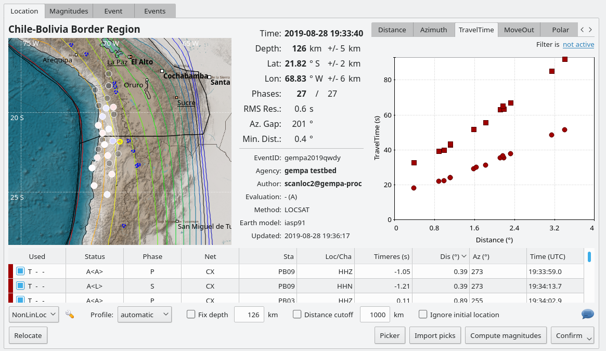
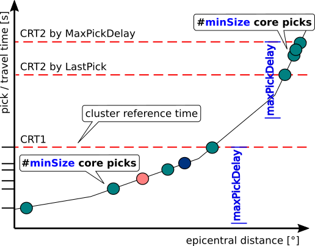
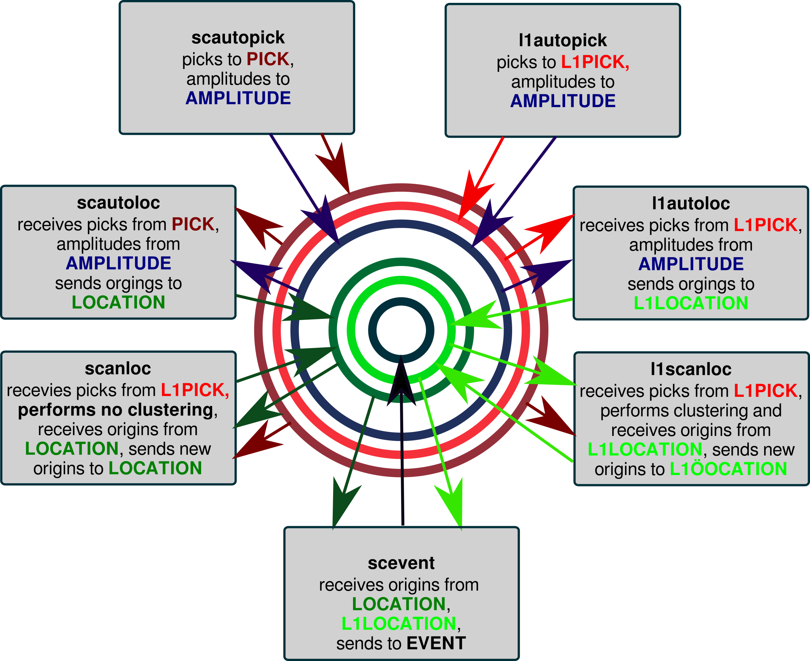
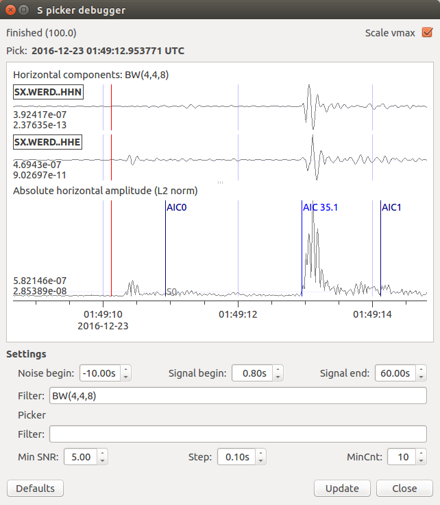

scanloc documentation¶
This is the documentation for the scanloc package in version 2023.325#090ad6fc3.




scanloc accociates P and S phases and locates the event
Phase association is based on advanced cluster search
Phase picks accross pipelines can be associated
A graphical debugger supports tuning for accurate S-phase picks